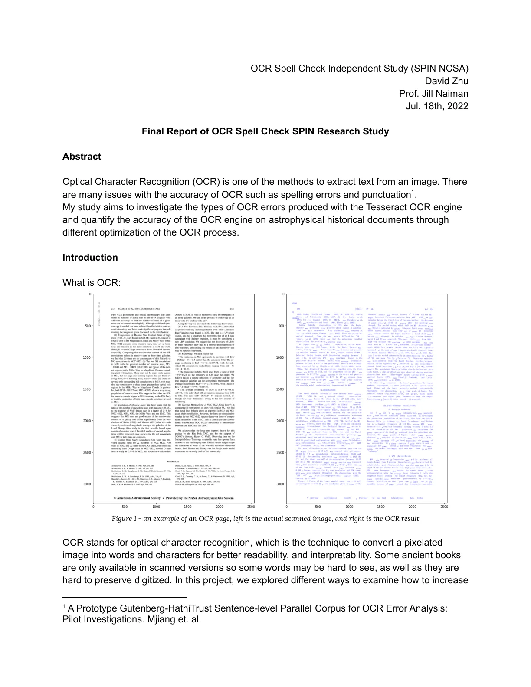
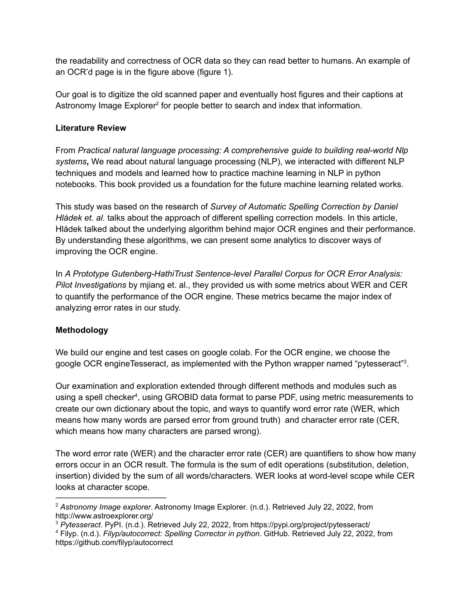
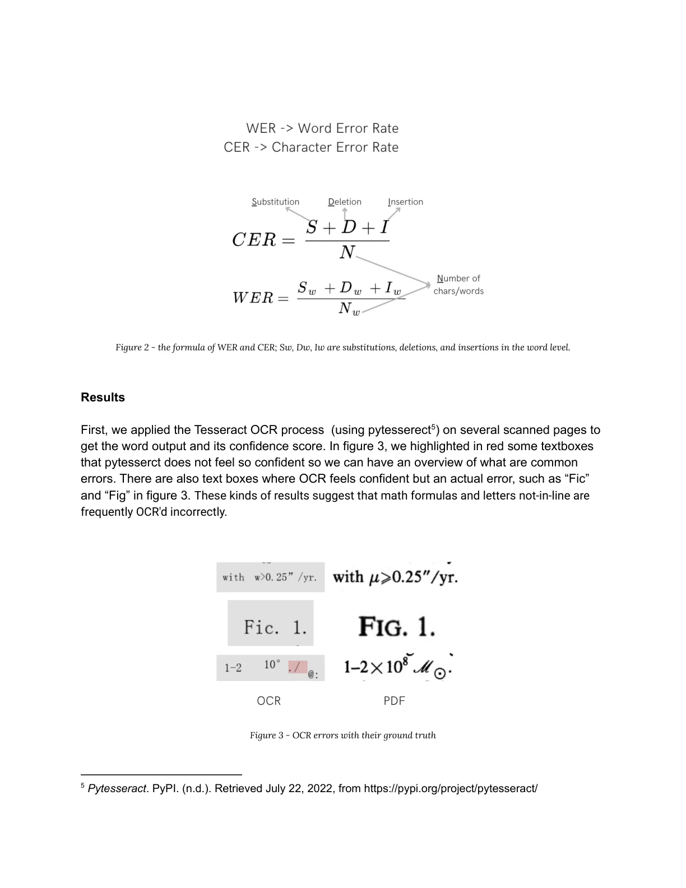
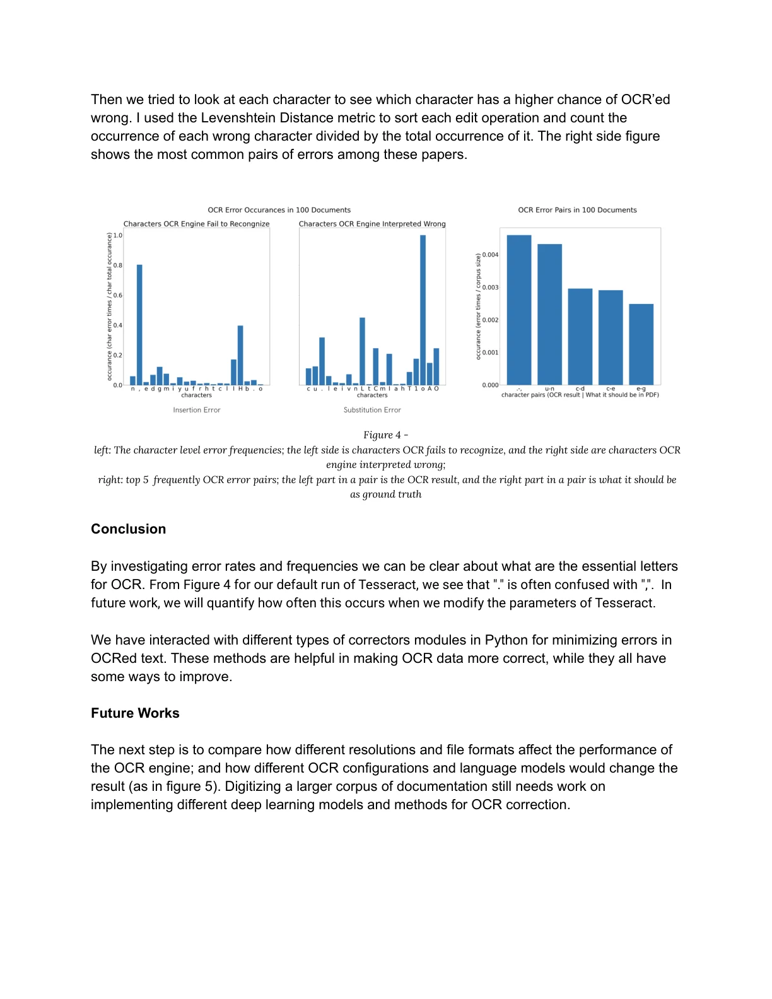
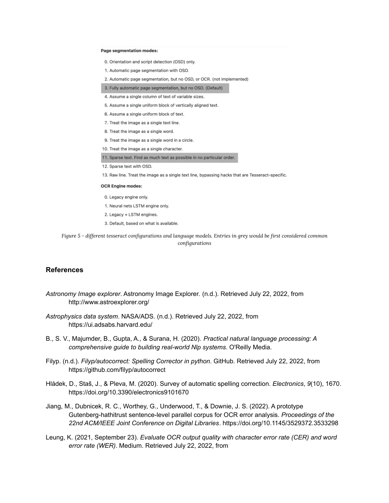
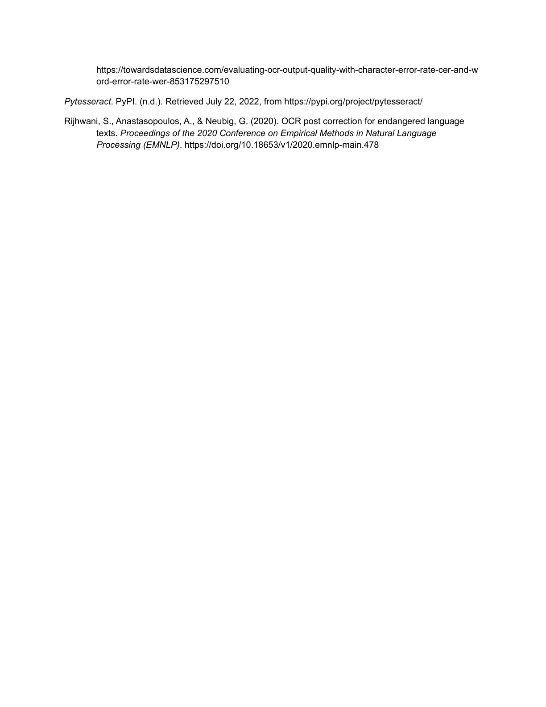

Skip to content
JZ
✳
Junting Zhu
JUNTING ZHU
中文
Menu
＋
Work
Research
About
Archive
↗
← Research
Reading Time Machine
Poster PDF ↗
Report PDF ↗
SPIN Poster
01 / 01
SPIN Report

01 / 06

02 / 06

03 / 06

04 / 06

05 / 06

06 / 06
Close ×